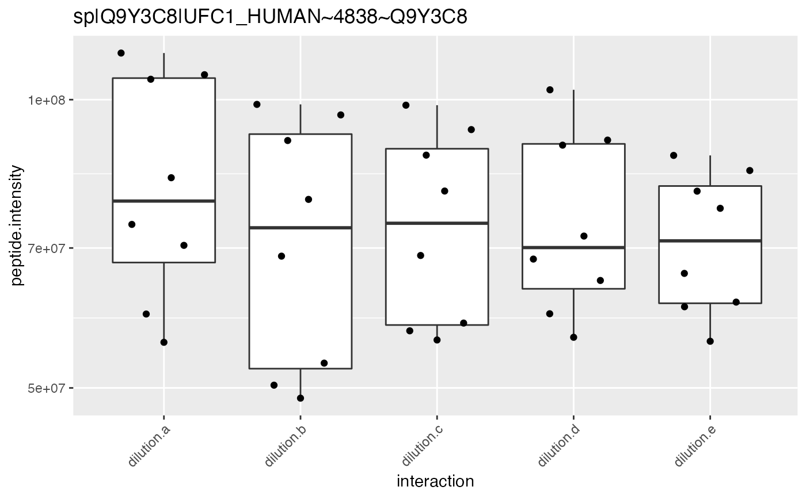
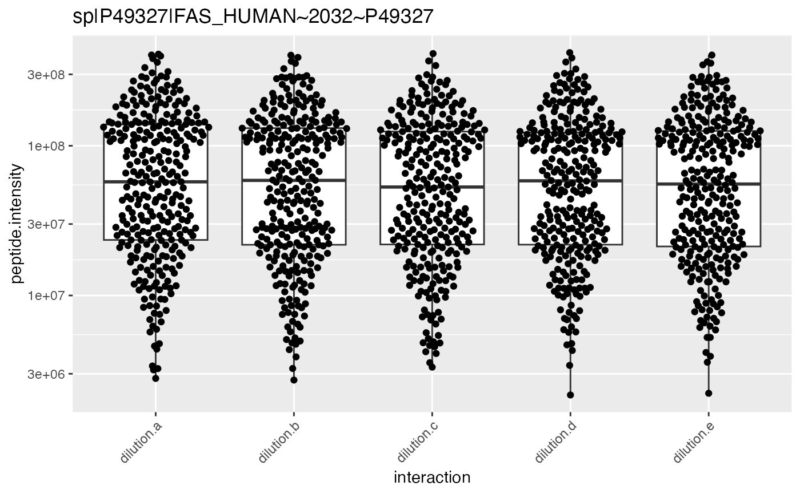
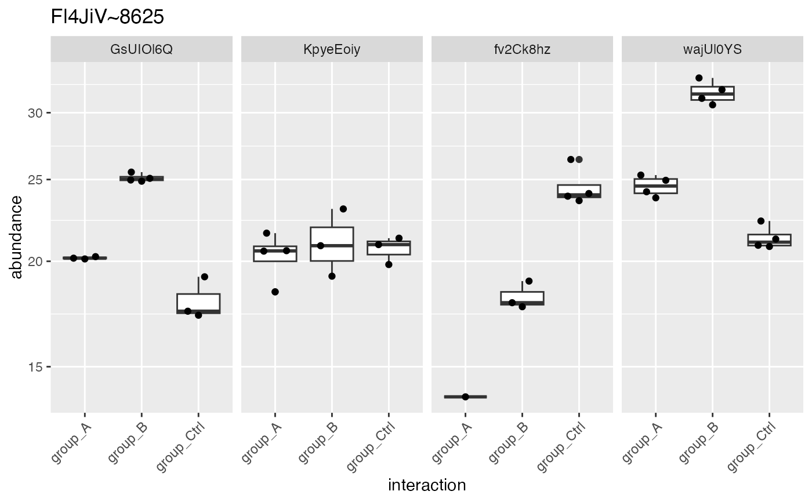
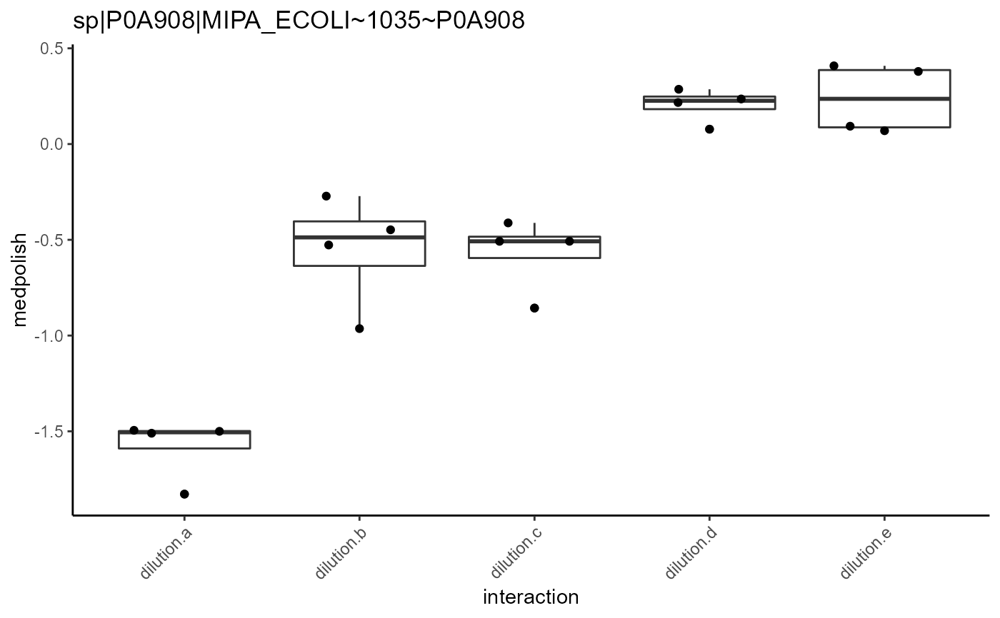
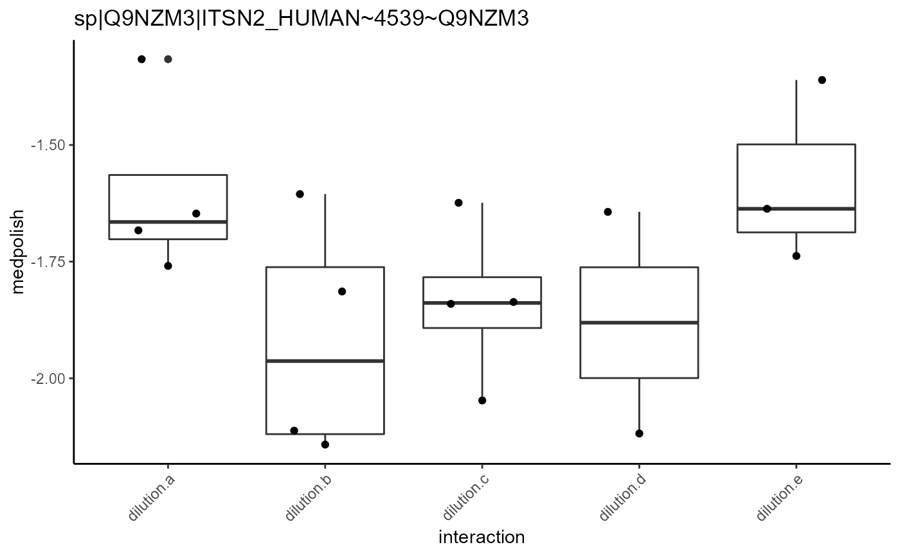
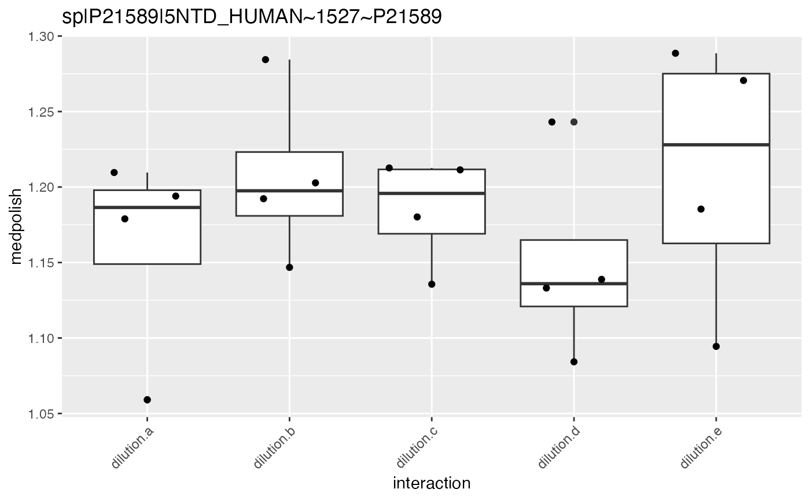

R/tidyMS_plotting.R
plot_hierarchies_boxplot_df.Rdgenerates peptide level plots for all Proteins
plot_hierarchies_boxplot_df(
pdata,
config,
hierarchy = config$table$hkeysDepth(),
facet_grid_on = NULL
)data.frame
AnalysisConfiguration
default NULL
e.g. protein_Id default hkeysDepth
Other plotting:
Contrasts_Plotter,
INTERNAL_FUNCTIONS_BY_FAMILY,
UpSet_interaction_missing_stats(),
medpolishPlydf(),
missigness_histogram(),
missingness_per_condition_cumsum(),
missingness_per_condition(),
plot_NA_heatmap(),
plot_aggregation(),
plot_heatmap_cor(),
plot_heatmap(),
plot_hierarchies_add_quantline(),
plot_hierarchies_line_df(),
plot_hierarchies_line(),
plot_intensity_distribution_violin(),
plot_pca(),
plot_raster(),
plot_sample_correlation()
iostar <- prolfqua_data('data_ionstar')$filtered()
#> Column added : nr_peptide_Id_IN_protein_Id
iostar$data <- iostar$data |>
dplyr::filter(protein_Id %in% sample(protein_Id, 2))
unique(iostar$data$protein_Id)
#> [1] "sp|Q7KZI7|MARK2_HUMAN~3274~Q7KZI7" "sp|Q9UN86|G3BP2_HUMAN~4731~Q9UN86"
res <- plot_hierarchies_boxplot_df(iostar$data,iostar$config)
res$boxplot[[1]]
#> Warning: Removed 46 rows containing non-finite values (stat_boxplot).
#> Warning: Removed 46 rows containing missing values (position_quasirandom).

res <- plot_hierarchies_boxplot_df(iostar$data,iostar$config,iostar$config$table$hierarchyKeys()[1])
res$boxplot[[1]]
#> Warning: Removed 46 rows containing non-finite values (stat_boxplot).
#> Warning: Removed 46 rows containing missing values (position_quasirandom).

res <- plot_hierarchies_boxplot_df(iostar$data,iostar$config,
iostar$config$table$hierarchyKeys()[1],
facet_grid_on = iostar$config$table$hierarchyKeys()[2])
res$boxplot[[1]]
#> Warning: Removed 46 rows containing non-finite values (stat_boxplot).
#> Warning: Removed 13 rows containing missing values (position_quasirandom).
#> Warning: Removed 17 rows containing missing values (position_quasirandom).
#> Warning: The default behavior of beeswarm has changed in version 0.6.0. In versions <0.6.0, this plot would have been dodged on the y-axis. In versions >=0.6.0, grouponX=FALSE must be explicitly set to group on y-axis. Please set grouponX=TRUE/FALSE to avoid this warning and ensure proper axis choice.
#> Warning: Removed 2 rows containing missing values (position_quasirandom).
#> Warning: Removed 14 rows containing missing values (position_quasirandom).

iostar <- prolfqua_data('data_IonstarProtein_subsetNorm')
iostar$data <- iostar$data |>
dplyr::filter(protein_Id %in% sample(protein_Id, 100))
unique(iostar$data$protein_Id)
#> [1] "sp|P21589|5NTD_HUMAN~1527~P21589" "sp|Q6UX04|CWC27_HUMAN~3241~Q6UX04"
#> [3] "sp|P46100|ATRX_HUMAN~1971~P46100" "sp|Q9Y3A5|SBDS_HUMAN~4827~Q9Y3A5"
#> [5] "sp|Q9NZM5|NOP53_HUMAN~4540~Q9NZM5" "sp|Q9Y2W2|WBP11_HUMAN~4806~Q9Y2W2"
#> [7] "sp|O00148|DX39A_HUMAN~156~O00148" "sp|Q99985|SEM3C_HUMAN~3972~Q99985"
#> [9] "sp|P04150|GCR_HUMAN~721~P04150" "sp|Q07866|KLC1_HUMAN~2617~Q07866"
#> [11] "sp|P41252|SYIC_HUMAN~1922~P41252" "sp|Q15036|SNX17_HUMAN~2886~Q15036"
#> [13] "sp|P50570|DYN2_HUMAN~2086~P50570" "sp|Q58FF8|H90B2_HUMAN~3080~Q58FF8"
#> [15] "sp|Q9UBI1|COMD3_HUMAN~4592~Q9UBI1" "sp|Q96JB2|COG3_HUMAN~3837~Q96JB2"
#> [17] "sp|P10909|CLUS_HUMAN~1329~P10909" "sp|P19367|HXK1_HUMAN~1483~P19367"
#> [19] "sp|Q6P3X3|TTC27_HUMAN~3209~Q6P3X3" "sp|Q99613|EIF3C_HUMAN~3943~Q99613"
#> [21] "sp|P55145|MANF_HUMAN~2193~P55145" "sp|Q8IWA0|WDR75_HUMAN~3400~Q8IWA0"
#> [23] "CON__P02769~18~NA" "sp|Q07020|RL18_HUMAN~2610~Q07020"
#> [25] "sp|Q6P587|FAHD1_HUMAN~3211~Q6P587" "sp|P46934|NEDD4_HUMAN~1988~P46934"
#> [27] "sp|P0AGJ5|YFIF_ECOLI~1292~P0AGJ5" "sp|P22564|RIHC_ECOLI~1551~P22564"
#> [29] "sp|Q99873|ANM1_HUMAN~3969~Q99873" "sp|P0AED0|USPA_ECOLI~1208~P0AED0"
#> [31] "sp|Q15813|TBCE_HUMAN~2967~Q15813" "CON__Q3SZR3~50~NA"
#> [33] "sp|Q15392|DHC24_HUMAN~2927~Q15392" "sp|O60645|EXOC3_HUMAN~416~O60645"
#> [35] "CON__P01030~9~NA" "sp|Q96T51|RUFY1_HUMAN~3915~Q96T51"
#> [37] "sp|O95361|TRI16_HUMAN~598~O95361" "sp|Q9H2G2|SLK_HUMAN~4222~Q9H2G2"
#> [39] "sp|O15511|ARPC5_HUMAN~313~O15511" "sp|P0C0V0|DEGP_ECOLI~1303~P0C0V0"
#> [41] "sp|Q12904|AIMP1_HUMAN~2664~Q12904" "sp|Q9UGV2|NDRG3_HUMAN~4627~Q9UGV2"
#> [43] "CON__Q28107~41~NA" "sp|Q6PL18|ATAD2_HUMAN~3230~Q6PL18"
#> [45] "sp|P0ACW6|YDCH_ECOLI~1162~P0ACW6" "sp|P48449|ERG7_HUMAN~2006~P48449"
#> [47] "sp|P29745|PEPT_ECOLI~1689~P29745" "sp|Q9H223|EHD4_HUMAN~4215~Q9H223"
#> [49] "sp|Q06481|APLP2_HUMAN~2605~Q06481" "sp|Q15257|PTPA_HUMAN~2912~Q15257"
#> [51] "sp|P46087|NOP2_HUMAN~1970~P46087" "sp|P18754|RCC1_HUMAN~1475~P18754"
#> [53] "sp|Q8WVV9|HNRLL_HUMAN~3618~Q8WVV9" "sp|Q567U6|CCD93_HUMAN~3076~Q567U6"
#> [55] "sp|Q14146|URB2_HUMAN~2808~Q14146" "sp|P0AFL3|PPIA_ECOLI~1254~P0AFL3"
#> [57] "sp|P23229|ITA6_HUMAN~1560~P23229" "sp|Q9H0C8|ILKAP_HUMAN~4193~Q9H0C8"
#> [59] "sp|Q08752|PPID_HUMAN~2629~Q08752" "sp|P68133|ACTS_HUMAN~2407~P68133"
#> [61] "sp|Q8WX92|NELFB_HUMAN~3628~Q8WX92" "sp|P20810|ICAL_HUMAN~1506~P20810"
#> [63] "sp|P0A6P1|EFTS_ECOLI~918~P0A6P1" "CON__P34955~32~NA"
#> [65] "sp|Q13162|PRDX4_HUMAN~2704~Q13162" "sp|Q9BPX5|ARP5L_HUMAN~3977~Q9BPX5"
#> [67] "sp|P49327|FAS_HUMAN~2032~P49327" "sp|P34209|YDCF_ECOLI~1787~P34209"
#> [69] "sp|Q96C90|PP14B_HUMAN~3749~Q96C90" "sp|Q92620|PRP16_HUMAN~3664~Q92620"
#> [71] "sp|P37744|RMLA1_ECOLI~1860~P37744" "sp|P09551|ARGT_ECOLI~884~P09551"
#> [73] "sp|Q9Y570|PPME1_HUMAN~4883~Q9Y570" "sp|P47985|UCRI_HUMAN~1999~P47985"
#> [75] "sp|Q96H79|ZCCHL_HUMAN~3813~Q96H79" "sp|Q96CV9|OPTN_HUMAN~3755~Q96CV9"
#> [77] "sp|P0A8P3|FETP_ECOLI~1024~P0A8P3"
res <- plot_hierarchies_boxplot_df(iostar$data,iostar$config)
res$boxplot[[1]]

res <- plot_hierarchies_boxplot_df(iostar$data,iostar$config,
iostar$config$table$hierarchyKeys()[1])
res$boxplot[[1]]

res <- plot_hierarchies_boxplot_df(iostar$data,iostar$config,
iostar$config$table$hierarchyKeys()[1],
facet_grid_on = iostar$config$table$hierarchyKeys()[2])
res$boxplot[[1]]
